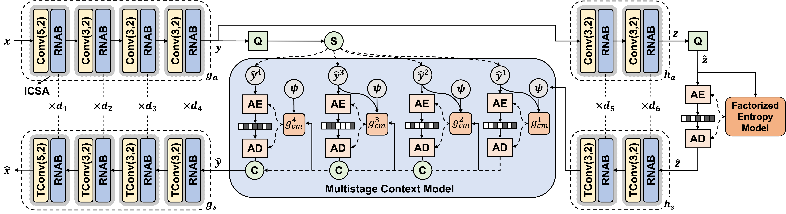
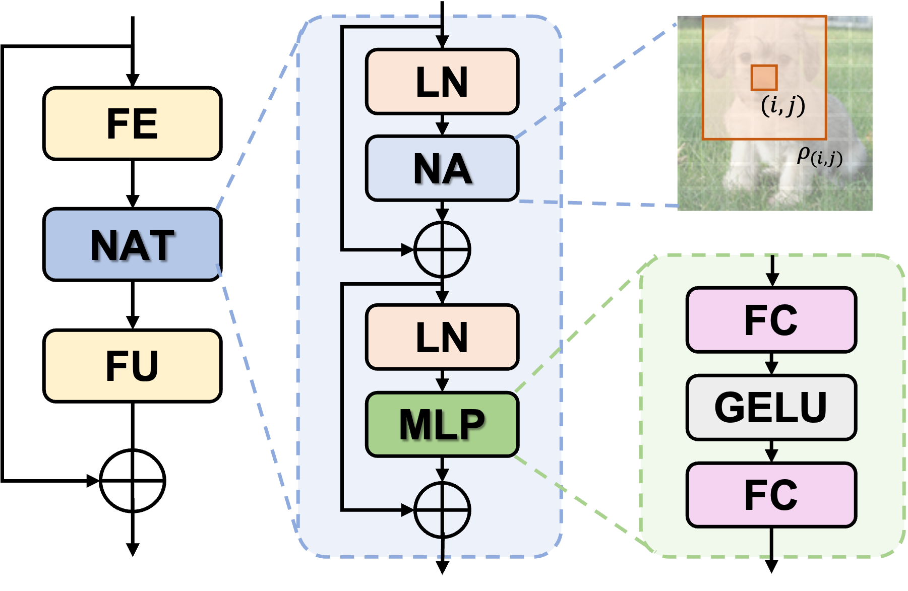
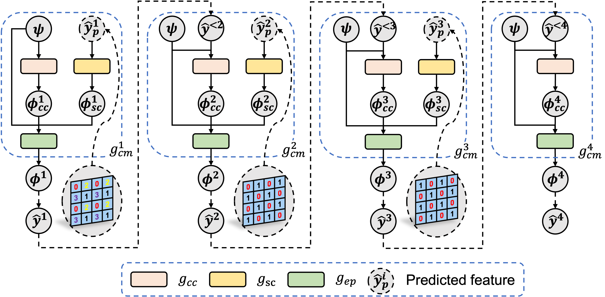

High-Efficiency Lossy Image Coding Through
Adaptive Neighborhood Information Aggregation


Questing for learned lossy image coding (LIC) with superior compression performance and computation throughput is challenging. The vital factor behind it is how to intelligently explore Adaptive Neighborhood Information Aggregation (ANIA) in transform and entropy coding modules. To this end, Integrated Convolution and Self-Attention (ICSA) unit is first proposed to form a content-adaptive transform to characterize and embed neighborhood information dynamically of any input. Then a Multistage Context Model (MCM) is devised to progressively use available neighbors following a pre-arranged spatial-channel order for accurate probability estimation in parallel. ICSA and MCM are stacked under a Variational AutoEncoder (VAE) architecture to derive rate-distortion optimized compact representation of input image via end-to-end learning. Our method reports state-of-the-art compression performance surpassing the VVC Intra and other prevalent LIC approaches across Kodak, CLIC, and Tecnick datasets; More importantly, our method offers $>$60$\times$ decoding speedup using a comparable-size model when compared with the most popular LIC method.

Pipeline of our proposed TinyLIC consists of Content Adaptive Tranform Coding and Multistage Entropy Coding.

Residual Neighborhood Attention Block (RNAB)

Multistage Context Model (MCM)


| Class | VVC Intra | TinyLIC | ||
|---|---|---|---|---|
| High Bitrate | Low Bitrate | High Bitrate | Low Bitrate | |
| A | -15.1% | -23.6% | -22.5% | -26.6% |
| B | -15.3% | -23.7% | -19.3% | -23.6% |
| C | -22.4% | -28.8% | -28.7% | -31.3% |
| D | -19.0% | -23.5% | -20.5% | -26.4% |
| Ave. | -17.9% | -24.9% | -22.8% | -27.0% |